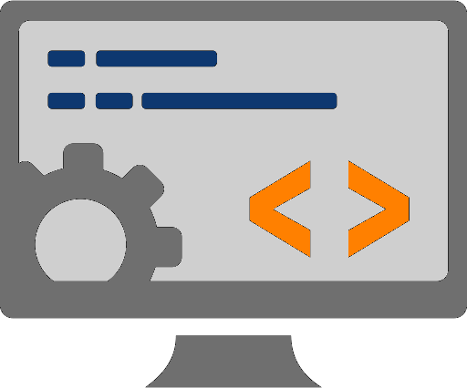

How it Works
Running a business is hard enough, we are here to lighten the weight by creating and maintaining your
Web Application so you can get back to focusing on running your business.
Stage One:
Tell Us about Your Business
In this stage we need to identify the end goal of the website design. It is important that we have a
full understanding of how your business works so we can do the research to place your site above your competition.
We will implement this information in the design of your site to ensure we are meeting the market conditions.
Stage Two:
Choose the Look and Feel
In this stage we provide examples of the foundation to which your site will be built, building a website without a
sitemap is like building a house without a blueprint. And that rarely turns out well. At this time we will also
display examples of unique visual designs. Visual content is known to increase clicks, engagement, and revenue.
Stage Three:
Website Construction
We feel the best way to construct a site is to share the development with the end user in a live environment.
We will provide you with a link so that you can see the progress and share your thoughts with us as we create your site.

Stage Four:
Website Launch
This is the final stage. We will launch your site for testing and make any changes if necessary. After your website goes live,
you will receive an analysis of your visitors and make sure we are reaching the targeted audience.